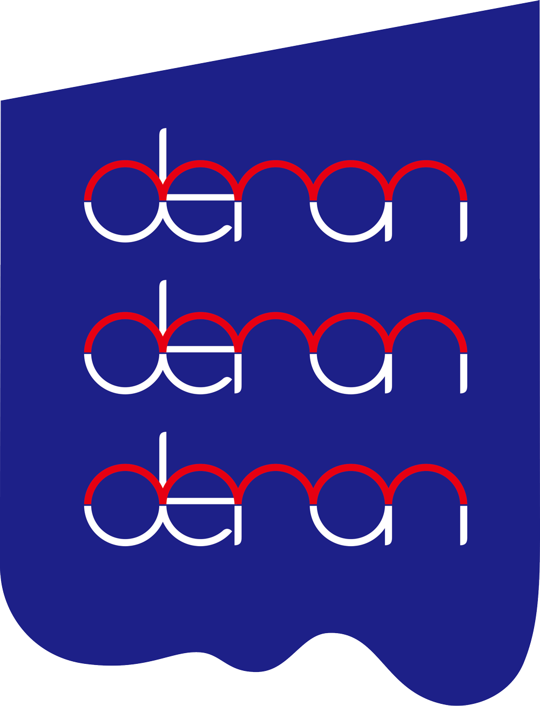

耳を疑え、そして聴け。
楽曲、ライブ共に多くのアーティストから
支持を集めているderonderonderon。
初の全国流通盤、発売決定！
攻撃的なギターリフから始まる1st mini album 「DIE SUKI」
愛も憎しみもポップに昇華した彼らの地団駄はステップを巻き起こす。
暴れ所を覚えた彼らはもう止まらない。
眠たいこと言ってる奴ら、全員DIE SUKIな！
deronderonderon 1st mini ALBUM
「DIE SUKI」
2015,05,13 ON SALE
JACKMAN RECORDS
ROJR-0040
収録曲
1.451014
2.NO SHIKO(DIE ver.)
3.I HATE YOU
4.Vampire!Love!
5.あなたまで
6.bassssshoy
deronderonderon 1st mini ALBUM「DIE SUKI」リリースパーティ
2015年5月29日(金)
東京都 下北沢GARAGE
詳細は近日公開
COMMENT
有江嘉典(VOLA&THE ORIENTAL MACHINE)
DelphicやDutch Unclesのようなシットリ感とRoyal BangsやSan Ciscoのような カワイイガチャガチャ感が混ざったバンドサウンドにさわいの毒のある唄の世界観。
deronderonderonを聴いてさぞかしアタマのキレる奴なんだろうと思いきや会ってみると結構バカでした。
さわい。最高です。
人間、バカな部分がある方が新しい物事に対して柔軟性がありセンスも磨かれていく。
今回のアルバムも見事にセンス全開で最高な出来になってました。
今俺の中で1番フレッシュでかわいいバンド、deronderonderonのステキな音楽であなたもステキなバカになってセンス良くなっちゃえば？
きっと世界が変わりますよ。
一瀬正和(ASPARAGUS)
難しいの嫌だし簡単じゃつまんない、あっけらかんに踊りたいけど一緒に歌いたい！！
そんなあなたにぴったりの1枚ですぜ。
このバンドのアレンジの素晴らしさったらありゃしない、 引き算が上手いんだなきっと！
聞かせたい音の為にプレイヤーのエゴを排除してるのね。
5人メンバーだと豪華な定食っぽくなりがちだけど1つの曲を1つのどんぶりに入れてくれた感じ！
奇想天外なのにPOPな曲達は奇妙な宇宙空間へ連れて行ってくれ、ミラーボールと共に踊らされる、 その内あたかもそこが正常な世界の様に錯覚させるおもしろさ！
是非とも聞いて踊ってね！
大山聡一(BRADIO)
まさに「トリップ&ダンス」!
次世代サウンドとグルーヴに乗せたさわいくんのループアタックがくせになる！ありがとうderonちゃん！
壺坂 恵
きっちり型取った物は綺麗に見えるけど、ワクワクする方が私は好き。
歪に屈折したあんたの脳みそは、これからも面白い事を提示してくれるんだろうなーと、アルバム聴きながら疼いてる。
面白そうで羨ましいし、ムカつくし、素敵。
とりあえず早く売れれば良いと思います。
デストロイはるきち(ミソッカス)
インテリジェンス溢れるアレンジとビートが鼻につくぐらいカッコいい。
それでいてライブは肉体派。
やっぱ鼻につくぜ。
ドラゴンチャレンジ(ザ・チャレンジ)
deronderonderonをはじめてライブハウスで目撃したとき、 ビリビリッと何か走ったんだよなぁ、背中のあたり。
ポップでキュートな出で立ちから繰り出される、
クールでちょっとアクの強い個性的な曲達。
さわいくんの歌は、行き場のない怒りと愛に満ちていて、ヒリヒリしながら目が離せなかった。
そのあと、ずっと彼らのことが気になってて、音源が出来上がるのをずっと楽しみに待ってたんだ。
そうして完成したミニアルバム“DIE SUKI”を聴かせてもらって、確信した。
「僕はあなたたちのことが好きです。もはや中毒です。」
さあ、怒涛のダンスナンバーとニヒルを武器に、
deronderonderonは君たちと出会うために腹をくくったみたいだ。
君たちはどうだ？
彼らと出会う覚悟はいいか？
橋本薫(Helsinki Lambda Club)
リスナーのご機嫌なんて取る気が毛頭ないような鋭いリフなのに、
体を揺らさずにはいられないビートに踊らされて結果ご機嫌。
そんな彼らのメロディに死ぬほど酔いしれるのか、はたまたその才能に殺したくなるような嫉妬を覚えるのか。
どちらにしても、皆DIE-SUKI！！
米田貴紀(夜の本気ダンス)
こういうバンドを僕は待っていたんだ！
洋楽的な楽曲に皮肉めいた日本語の歌詞。
でも気取ってなくて（ここ超大事！）
お茶目で明るいバイブスに満ちたライブ。
本当DIE SUKIだぜderonderonderon。
リーダー(チーナ)
パッと思いついた単語は『ダサかっこいい。』
もちろん褒め言葉で。
ダサさとかっこよさは紙一重であり、そのすれすれにかっこいいものがあると僕は思う。
しかも他のバンドではできないダサいすれすれをderonderonderonはやってるしできる。
きっとさわいかんが飲み会でコーラを飲むようなダサい人間だからだ（笑）
冗談は置いといて、
曲もミックスも新しいモノにベクトルが向いてるけど色々なジャンル、時代の音楽をきいてきたバックフィールドをちゃんと感じる。
前のアルバムからすると地に足ついた感じがある。
んーと、ダサいって言いましたが単純にかっこいいです。
ノレます。
なんか、ハマります。
deronderonderon プロフィール
Vo.さわいかんを中心に横浜で結成された平均年齢 22 歳の ダンス・ロックバンド。
思考停止状態である現代人の頭を赤信号から青信号にするべく、
DANCE ROCKに大さじ2杯の毒をかけたサウンドに のせて、独自の感覚と思考を吐き出す。
2014 . 01
MASH A&R 1月度優秀アーティストにwall off”にて選出。
2014 . 04
COMIN’ KOBE 14一般選考枠にて最終選考選出。
2014 . 08
RO69JACK 14にて優勝アーティストに選出。
ROCK IN JAPAN FES 2014に出場。
2014 . 10
DIVING ROCK IN KANAZAWAに出演。
出演会場：8HALL(収容人数800名)
(下のロゴから公式サイトへ)

©deronderonderon
designed by YU KANAKURA


 deronderonderon
1st mini ALBUM
deronderonderon
1st mini ALBUM